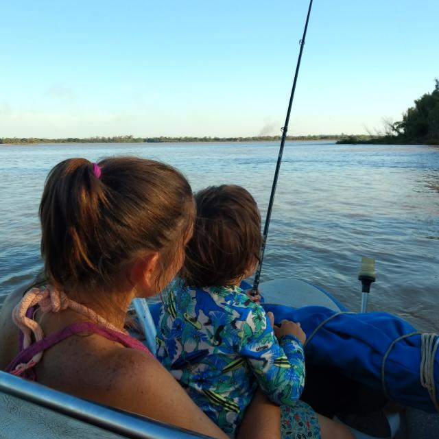
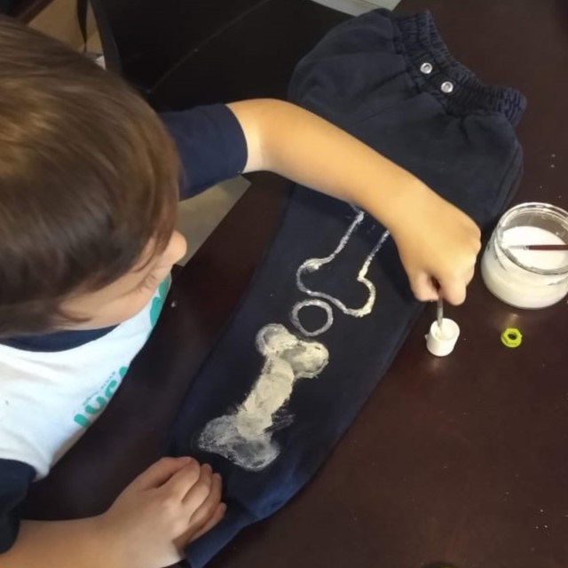
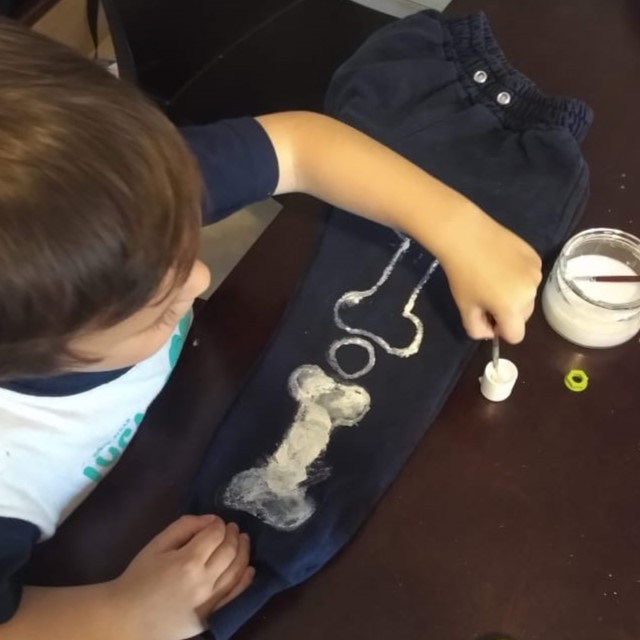
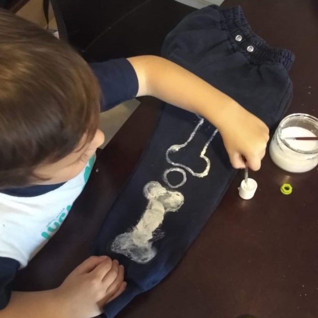

MI NOMBRE ES MARA RUSCIO
Nací en 1984 en La Plata, Argentina.
Soy la del medio de tres hermanos.
Estudié Bioingenieria en la Universidad Nacional de Entre Rios. Y gracias a esa provincia nacio mi amor por el rio y las actividades acuaticas.
En 2017 nacio mi hijo.
Después de no saber que mas inventar para sacar a mi hijo de delante de la pantalla, empecé a buscar recursos en la electronica y en la química para captar su atencion.
Hoy, a mi hijo, le encanta mostrar como crecen sus cristales de bicarbonato, explicar como envia mensajes secretos o como creaciones en masa pueden encender un led.
Me encanta la cara de sorpresa que tiene cada vez que se le presenta algun nuevo desafio y como se las ingenia pasra poder entender las cosas que pasan

 

